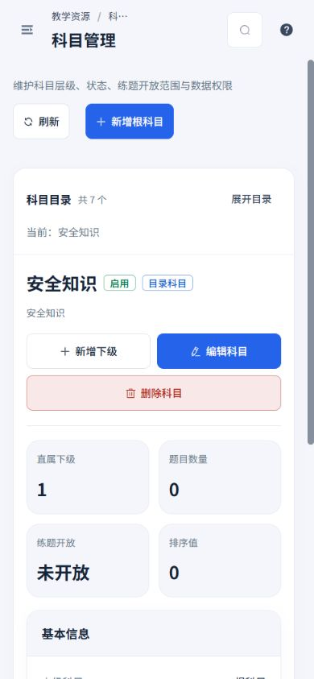
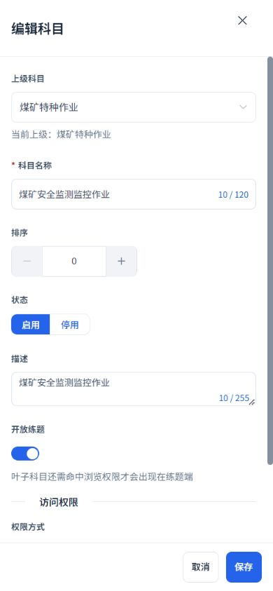
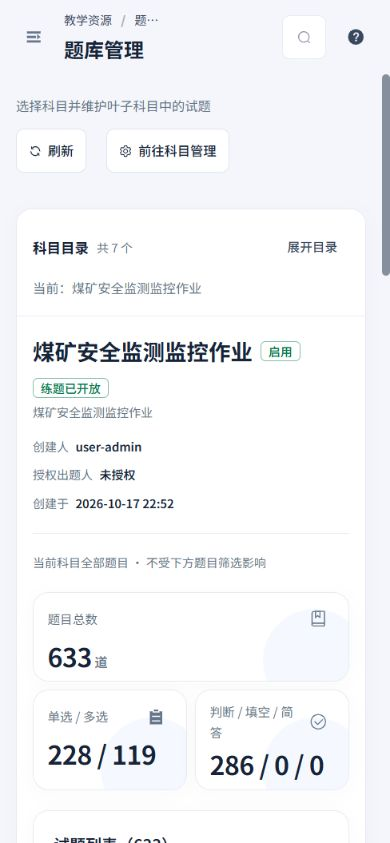
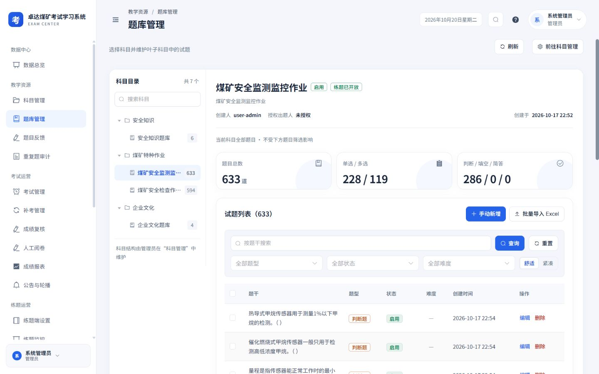
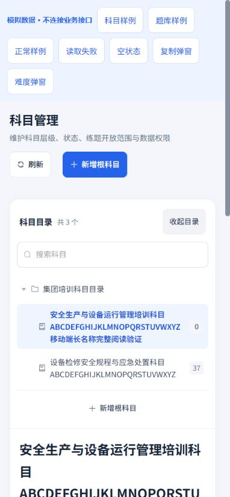
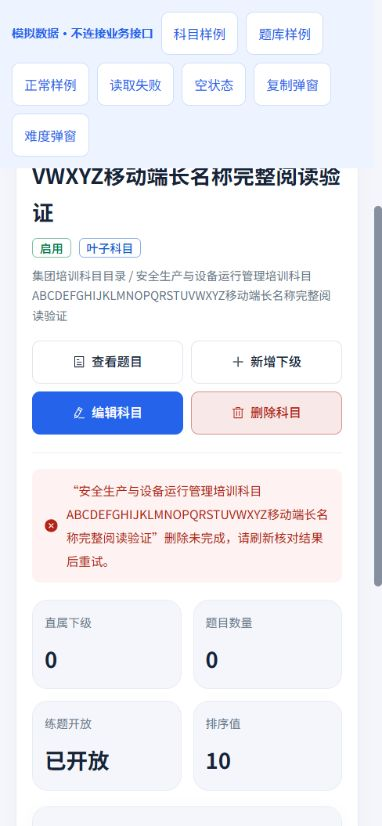
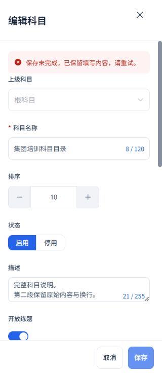
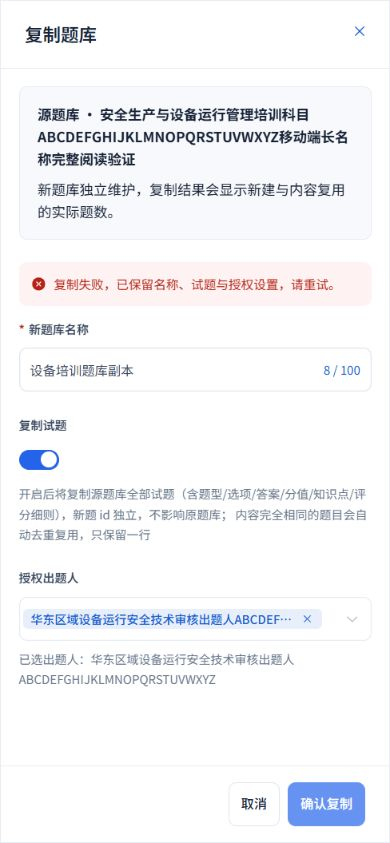
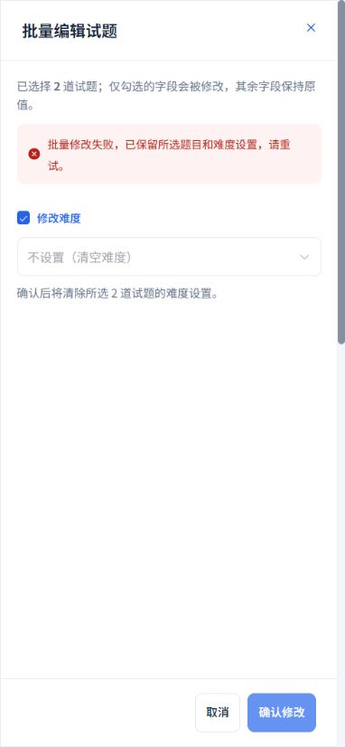
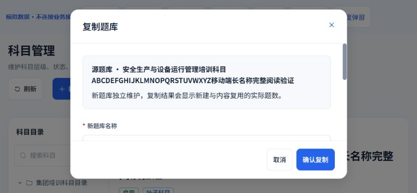

2026-10-20 · Workbuddy 01 · 本轮本地实施：科目管理、题库目录、科目编辑、复制与批量难度
目录适合手机，编辑过程可恢复
延续白侧栏、浅灰蓝底、蓝色操作及16 px卡片。完整保留目录层级、五类题型、原题目功能、继承与覆盖权限、管理员与出题人边界及考务安全规则。
本轮落地
- 手机科目目录默认收起，保留完整当前名称；展开后可搜索和内部滚动，节点至少44 px，长名称换行；选择节点后自动收起。刷新保留搜索条件，加载中不显示0个科目。
- 目录子科目卡片使用16 px圆角，完整显示长名称，提供键盘焦点。科目指标两列，完整描述保留段落；有效权限继续由服务端返回，失败单独重试。
- 删除保持“有下级或题目不可删除”的原限制；确认与请求期间防重入，锁定冲突操作。失败保留当前科目，提示刷新核对结果；成功后目录读取失败进入独立重试状态。
- 科目编辑完整显示选中的上级、部门及人员；排序加减44×44 px，禁用语义同步实际状态。保存期间锁定包含继承方式、部门及包含子部门等条件控件；失败保留草稿，已创建但权限未保存仍沿用同一科目重试。
- 复制弹窗完整显示源题库和已选出题人；空白名称就地报错并聚焦，失败保留设置。管理员授权选择器在提交期间锁定，出题人角色仍不提交管理员授权字段，原服务端继承规则保持。
- 批量难度明确标出所选题数、只修改勾选字段以及清空难度的影响；原始题目ID及null清空语义保持。提交期间锁定难度、勾选项和关闭，失败保留草稿。
- 两个题库编辑弹窗在窄屏全屏，正文内部滚动，底部操作至少44 px；横屏也保留可见底栏。
实际应用
使用现有管理员会话进行只读验证。实际目录7个节点；所选“煤矿安全监测监控作业”题库633道，单选228、多选119、判断286，填空及简答为0；统计继续注明当前科目全部题目，不受下方筛选影响。打开科目编辑后取消，未保存配置、复制题库、批量修改或删除真实业务数据。







边界与失败样例
以下使用真实组件与独立模拟接口；模拟读取或写入失败不连接业务接口。题库目录样例中的试题区域为明确标识的占位，真实试题列表另在正式页面核对。











验证结果
- 6个测试文件共27项通过，覆盖目录读取与搜索、权限请求竞态、删除防重入与恢复、原授权边界、条件控件锁定、排序禁用语义、清空难度及复制校验。
- 35组实际及样例布局测量，覆盖320×740、390×844、844×390、1440×900；未发现整页或弹窗横向溢出，长内容在指定正文区域滚动。
- TypeScript检查、生产构建和Git差异空白检查通过；补充设计已接入目录，保留既有页面ID及历史设计链接。
本轮结果为本地代码和验收记录。页面、权限及服务端业务规则沿用原实现；演示与模拟截图分别注明。